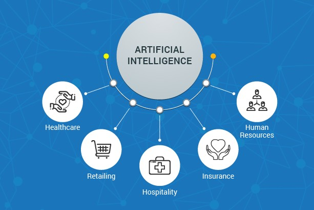

The Rise of AI: Transforming Industries with Intelligent Technology
The latest advancements in artificial intelligence (AI) are reshaping industries across the board. From healthcare, where AI assists doctors in diagnosis and treatment decisions, to finance, where it enhances fraud detection and market predictions, the impact is undeniable. In the automotive sector, AI is driving progress in autonomous driving technology, while in customer service, AI-powered chatbots deliver personalized assistance. Additionally, AI is revolutionizing education through personalized learning experiences and virtual classrooms. Overall, AI's integration across industries is fueling innovation and paving the way for a smarter, more connected future.
Learn more about AI's impact on industries